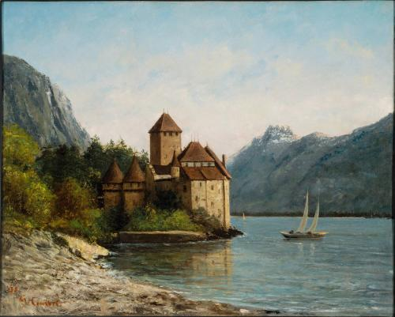
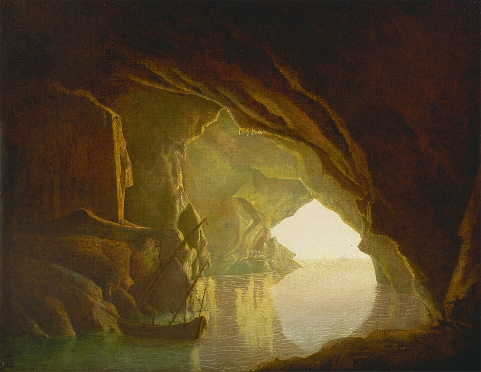
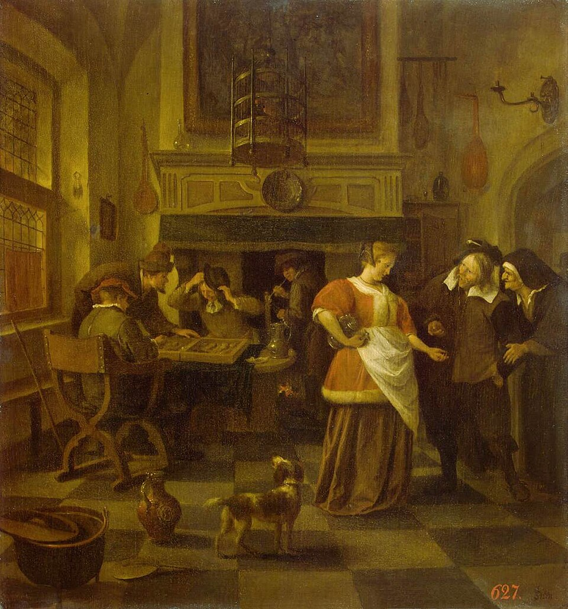
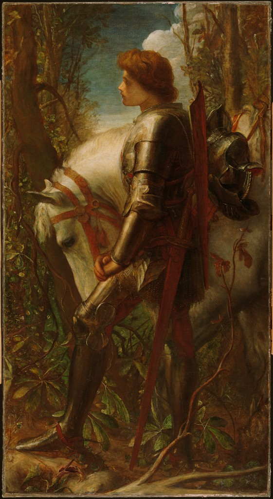
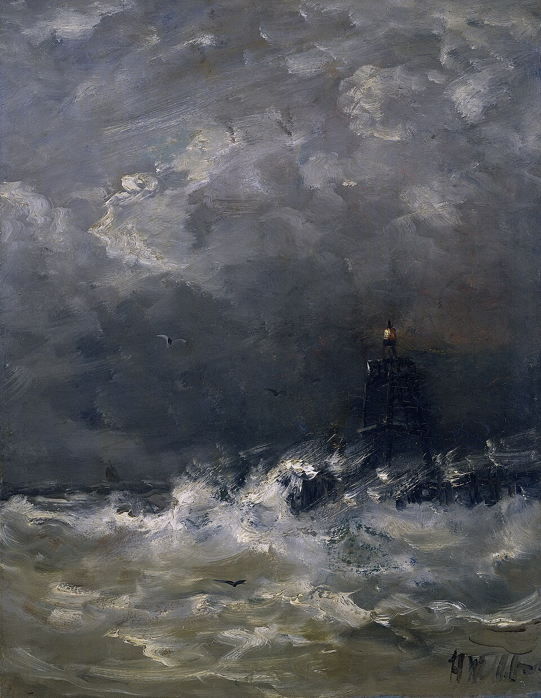
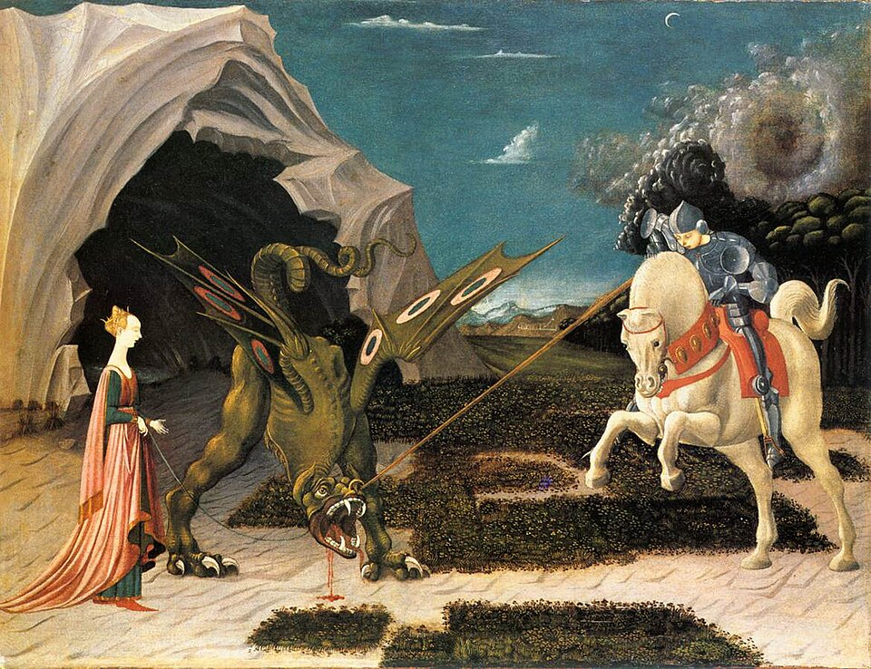

Galeria da Estante
Essa é a galeria de jogos disponíveis com suas respectivas capas, totalmente abertos para inscrição.

Gustave Courbet, 1872

Joseph Wright of Derby, c. 1780

Jan Steen, c. 1670

George Frederic Watts, 1862

Hendrik Willem Mesdag

Paolo Uccello, c. 1456